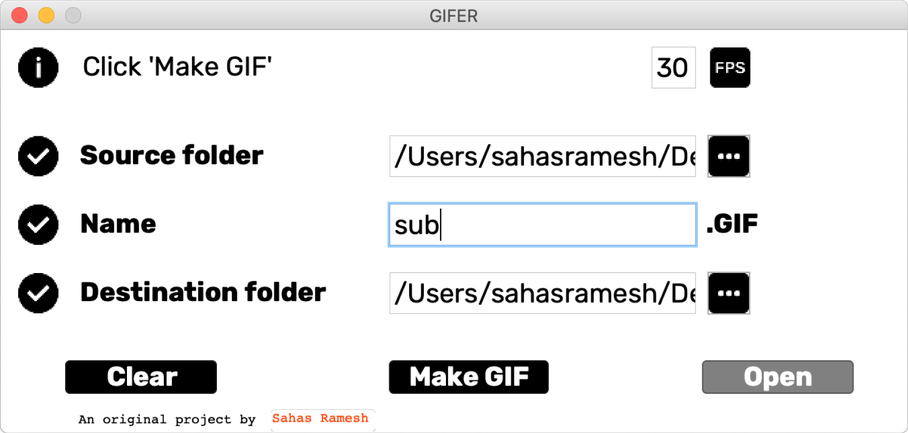

Click ‘Open’ once the GIF has been made to go to the selected destination folder.

The program takes a folder provided by the user and sorts all the PNGs in the folder in alphabetical order. The folder on the left contains 60 individual frames.
Specify the framerate, name, and destination of the resulting GIF and click ‘Make GIF’.
Click ‘Open’ once the GIF has been made to go to the selected destination folder.
Images by Sagar Ramesh
An original project by Sahas Ramesh